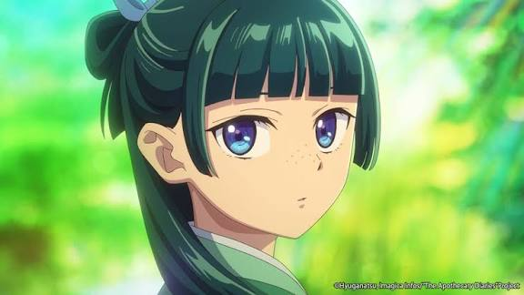
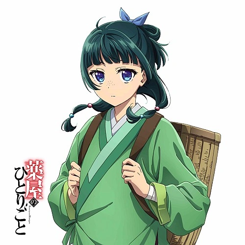

Maomao

Boticaria y probadora de venenos, curiosa y experta en plantas medicinales.
- Conoce remedios y venenos.
- Trabaja en el palacio interior.
- Investiga misterios con ingenio.
Los Diarios de una Boticaria
Una historia de medicina, misterios e intrigas en el palacio.
"El veneno y la medicina son las dos caras de una misma moneda. Todo depende de la dosis y de la intención de quien lo administra." — Cuaderno de notas de Maomao

Boticaria y probadora de venenos en el palacio imperial.
Tres personajes unidos por los secretos, la medicina y la vida en la corte imperial.

Boticaria y probadora de venenos, curiosa y experta en plantas medicinales.
Administrador del palacio interior, distinguido y envuelto en intrigas.
Leal asistente de Jinshi y apoyo constante en sus tareas.
Las plantas pueden aliviar dolencias, aunque algunas esconden peligros. Maomao estudia sus propiedades con cuidado.
Cada cajón de madera de cedro resguarda raíces, hojas desecadas y minerales. La toxicidad varía según la preparación, la maceración y la interacción con sales de plomo de los cosméticos cortesanos.
Hierba aromática conocida por sus usos tradicionales.
Raíz de aroma intenso usada en remedios y preparaciones.
Planta tóxica que Maomao reconoce y manipula con extrema precaución.
¿Tienes alguna pregunta sobre la historia o sus personajes?
Gracias por tu interés en Los Diarios de una Boticaria.
La boticaria del palacio interior
Nacida en el barrio de las flores, Maomao creció entre hierbas, ungüentos y venenos. Su curiosidad y su mente analítica la llevaron a convertirse en una de las figuras más brillantes del palacio imperial.
El administrador del palacio interior
De apariencia impecable y modales refinados, Jinshi supervisa la vida diaria del palacio interior. Detrás de su sonrisa se esconden responsabilidades enormes y secretos que pocos conocen.
El leal asistente de Jinshi
Discreto, eficiente y siempre atento, Gaoshun acompaña a Jinshi en cada tarea dentro del palacio. Su experiencia y su calma lo convierten en un pilar fundamental de la corte.